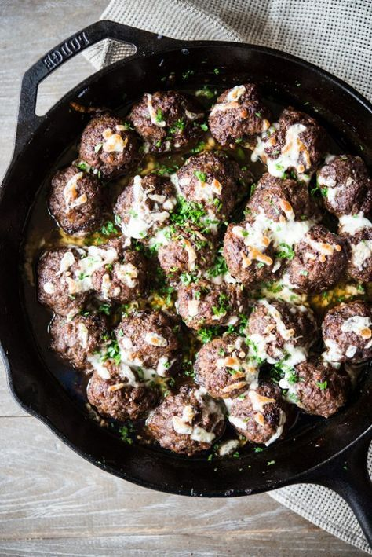

This is a recipe for meatballs passed down to me from my grandfather. The recipe is fairly simple, but packs quite the flavorful punch.
Description
This recipe is one my grandfather created when he was younger and taught me how to make. The meatballs only use
four ingredients, but the sauce is a little more complex. It doesn't use specific amounts, and is mainly to taste.
Meatball Ingredients:
- 2 Pounds Ground Chuck: I prefer ground chuck to ground beef, due to the lower fat, as well as it holding shape better.
- 1 or 2 Diced Medium yellow onions: This is a personal preferance of how many you should use.
- Jalapeno Peppers: These should be sliced, and include seeds and flesh. Again, how many you should use is preferance.
- Salt and Pepper: 1 tsp each.
Sauce Ingredients:
The sauce uses a combination of off-the-shelf sauces, and have no set amounts. They should be mixed to preferred taste.
- A1 Sauce: I prefer A1, but any of the steak sauces like it are usable.
- Heinz 57 Sauce: Same as A1.
- Worcestershire Sauce:
- BBQ Sauce: Whichever brand you prefer, but I like a combination of sweet and spicy.
- Ketchup
- Mustard
- Hot Sauce
- (optional)Beer: This is optional, but preferred. The alcohol will mostly cook off. 1 8oz can will suffice. Choose whichever
brand you prefer.
Cooking Instructions:
- Make the sauce: In a large bowl, stir together all the sauces until fully combined. Cover and set aside.
- Form the meatballs: Combine the salt and pepper to the ground chuck, then form them into, roughly, 1-1.5oz meatballs.
Using a feed scale helps, but isn't necessary. Place the meatballs in the skillet. Try to leave a little space between them. - Add the Onions and Jalapenos: Add the diced onions and sliced jalapenos to the peatballs in the skillet. Be sure to
spread them out so the cover the meatballs and get between them. - Cook: Cover the skillet and cook the meatballs on medium heat, until fully brown on ouside. This usually takes between
10-15 minutes. After the meatballs brown, lower heat to medium-low and cook until an instant-read thermometer reads 160°F.
Drain as much fat as you can from the meatballs when done. - Add the sauce: Add the sauce to the meatballs, making sure to cover all of them. Cover and bring the meatballs
to a simmer. Cook for 10-15 minutes. - (Optional)Add the Beer: Add the beer to the meatballs, and simmer an additional 5-10 minutes.This depends on how much
alcohol flavor you prefer. - Serve: Serve with whatever sides you prefer.